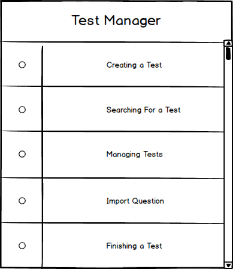

2.3. Test Manager
This is the popup that appears to the scree after the user logs in to his/her account (Figure 1). The popup will provide options to the user to either create a test, search for a test, manage a test, import question, or finish a test.

Figure 1: Question Manager popup.
Clicking on each of the options of popup, the application, will redirect the user to a corresponding page, allowing him/her to perform the desired action:
Note: After test is published all questions, answers and images are locked for this test (aka editing a question afterwards will not auto change the published test question).
Prev: question-manager
| Next: take test
| Up: functional
| Top: index